Car Sales Prediction
Introduction
The prediction of car sales is an important and rewarding problem in current times.
Machine learning proves to be effective in assisting in making predictions from the large quantity of data produced by the car industries. This project aims to predict the car sales by analyzing data of sales.. Machine Learning techniques can be a boon in this regard. By collecting the data from various sources, using them under suitable headings & finally analysing to extract the desired data we can say that this technique can be very well adapted to do the prediction of car sales.
Dataset
Data Analysis
Data analysis refers to the process of manipulating raw data to uncover useful insights and draw conclusions.
In this project dataset in taken from recognised platform named Kaggle, ”car_sales.csv”.
Dataset here contains some NAN values i.e. some missing values, there are 3
categorical features as well as 12 numeric features
On describing dataset it shows:
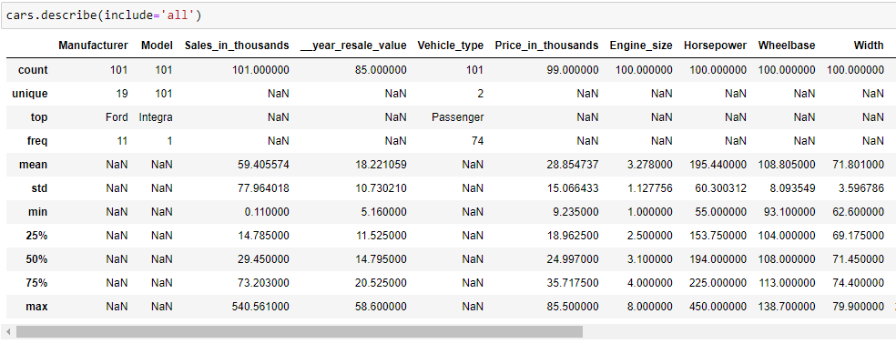Cleaning of Dataset:
Outlier Treatment
Missing Value Treatment
Categorical Value Treatment
An outlier is an extremely high or extremely low data point relative to the nearest data point and the rest of the neighbouring.
Outliers are treated by using quantile() method of python.
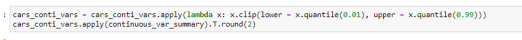
Occur when no data value is stored for the variable in an observation.Here NA vales are treated by the mean of the input feature or median of input features. 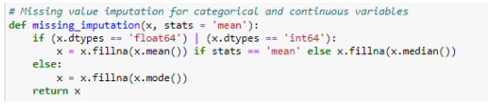
categorical data has values and observations which can be sorted into categories or groups like Gender. Here Categorical values are treated using dummy variables. 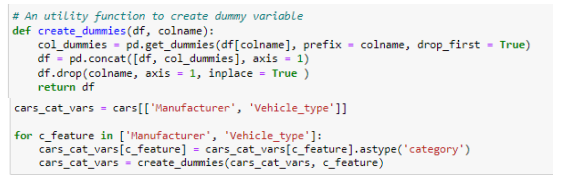
Scaling of Dataset
Scaling of features is an essential step in modelling the algorithms with the datsets. The data obtained contains features of various dimensions and scales altogether. Different scales of the data features affect the modeling of a dataset adversely. Here StandardScalar() function is used for scaling. 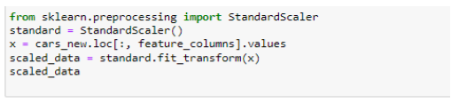
Training and Testing of Model
Training data is the subset of original data that is used to train the machine learning model, whereas testing data is used to check the accuracy of the model. The training dataset is generally larger in size compared to the testing dataset.
Libraries used in the code
NumPy
Pandas
Sklearn
Matplotlib
Seaborn
Techniques used in the code
Linear Regression
Adaboost Regression
Random Forest
K-Nearest Neighbors
Support Vector Machines
Decision Tree
Linear regression is a linear approach for modelling the relationship between a scalar response and one or more explanatory variables.In linear regression, the relationships are modeled using linear predictor
functions whose unknown model parameters are estimated from the data. Such models are called linear models.
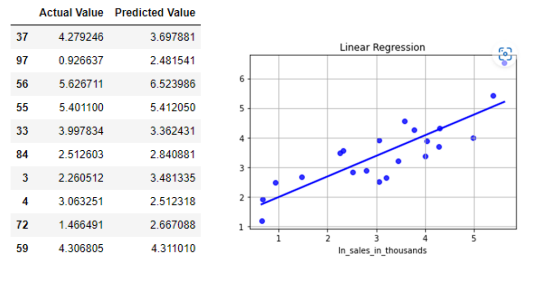
The core principle of AdaBoost is to fit a sequence of weak learners (i.e., models that are only slightly better than random guessing, such as small decision trees) on repeatedly modified versions of the data. The predictions from all of them are then combined through a weighted majority vote (or sum) to produce the final prediction.
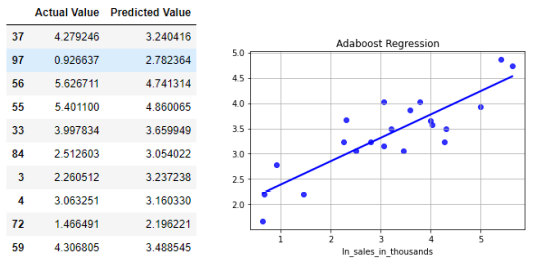
A random forest is a meta estimator that fits a number of classifying decision trees on various sub-samples of the dataset and uses averaging to improve the predictive accuracy and control over-fitting.
In random forests each tree in the ensemble is built from a sample drawn with replacement (i.e., a bootstrap sample) from the training set.The purpose of these two sources of randomness is to decrease the variance of the forest estimator.
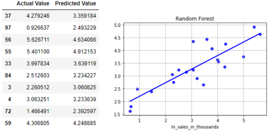
KNN regression is a non-parametric method that, in an intuitive manner, approximates the association between independent variables and the continuous outcome by averaging the observations in the same neighbourhood.The target is predicted by local interpolation of the targets associated of the nearest neighbors in the training set. 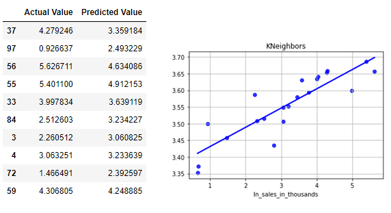
The method of Support Vector Classification can be extended to solve regression problems. This method is called Support Vector Regression.The model produced by support vector classification depends only on a subset of the training data, because the cost function for building the model does not care about training points that lie beyond the margin. Analogously, the model produced by Support Vector Regression depends only on a subset of the training data, because the cost function ignores samples whose prediction is close to their target.

Decision tree regression observes features of an object and trains a model in the structure of a tree to predict data in the future to produce meaningful continuous output. Continuous output means that the output/result is not discrete, i.e., it is not represented just by a discrete, known set of numbers or values.
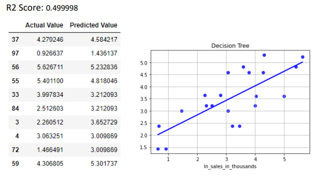
Conclusions of the results
I studied and implemented Various supervised machine learning algorithms to predict and estimate sales of cars. Data was split into test and train and after necessary implementation steps, I found out that Linear Regression is able to most accurately predict the sales for this particular type of data-set. Any such data set that consists of industry-based most impactful features and a general mix of manufacturers will be accepted by the algorithm and a similar prediction can be replicated.After implementing and comparing the accuracy of various methods, we come to the following Result..
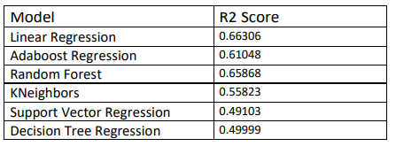
Linear Regression provides the best accuracy at this point in time in the study. Random Forest and Adaboost Regression also contribute to the ongoing study path.
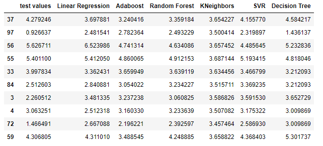This is the line plot which shows distribution of predicted values of diffrent values
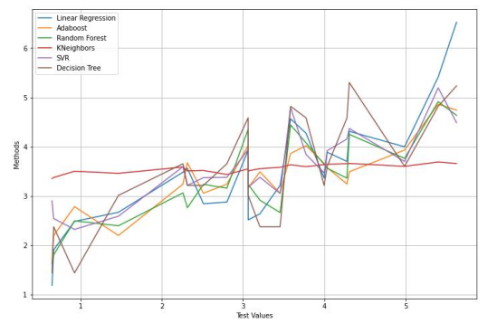